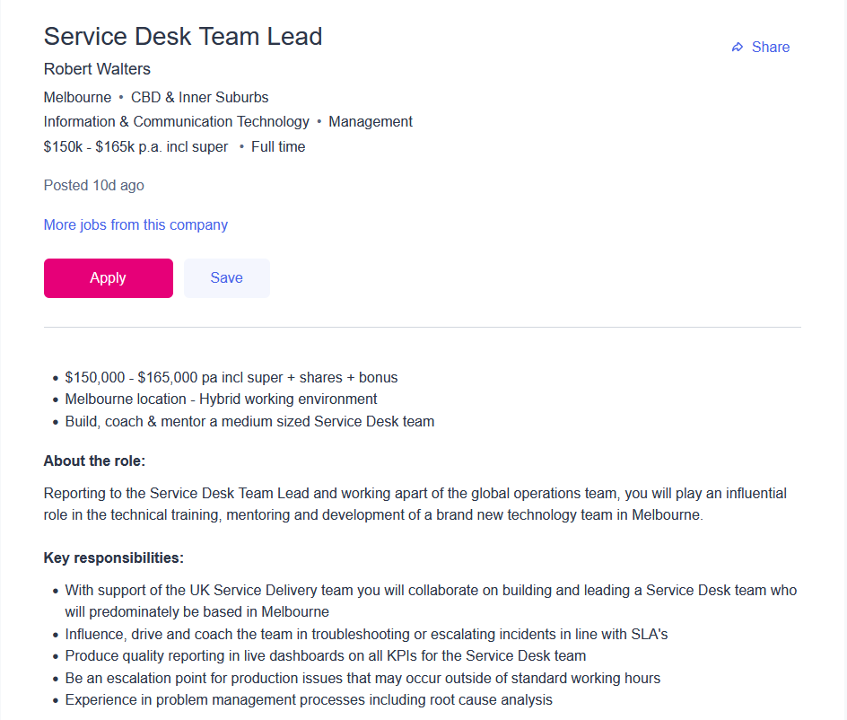

The job I have looked at as an ideal job is as a Service Desk Team Lead for Robert Walters. The position of Service Desk Team Lead entails several responsibilities, including managing a service desk team based in Melbourne, leading the team through troubleshooting and reporting, providing a point of escalation for problems that occur outside of typical work hours, and being a point of contact for the UK service delivery team. This position appeals to me for several reasons. Firstly, the pay is attractive, offering $150,000 to $165,000 as well as superannuation, shares and the potential for bonuses. The job is for full time hours with a hybrid work location, allowing for working from home office or on-site as required. Having a hybrid work environment is very important to me, especially after the last few years, and the requirement for availability of contact outside of standard work hours is bearable. Additionally, the offering of a benefits package is appealing, although I would definitely enquire as to exactly what those benefits are.I would also enquire beforehand as to the company's policies on diversity in the workplace, if any, as having a diverse group of people within a workplace is very important to me personally.
The role requires a tertiary degree in Information Technology or a similar field, as well as experience and in depth knowledge with ITIL processes, G suite, various operating systems, and cloud based services. Additionally, the role requests that applicants have over five years experience with leading service desk teams of medium size, preferably at a global scale. As the role requires leading a team and working with other teams, a degree of interpersonal skills will likely also be required, although the advertisement doesn't state this directly. I already have some experience working with some technologies listed, having interacted with Windows and MacOS, as well as some basic databases and cloud storage systems, as well as having a level of interpersonal skills and teamwork due to my prior work experience. The rest of the required experience I plan to gain through completion of my degree, and then entering the workforce with an emphasis on service management, working on/with service desk teams and ideally making my way up to managing teams. This should not only increase my level of familiarity with the required technologies, but also improve my soft skills required for the role.
Robert Walters 2022, Service Desk Team Lead Job in Melbourne - Seek, Seek Limited, viewed 21st March 2022,